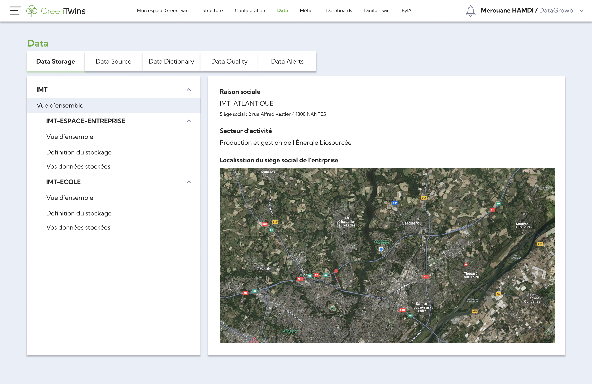
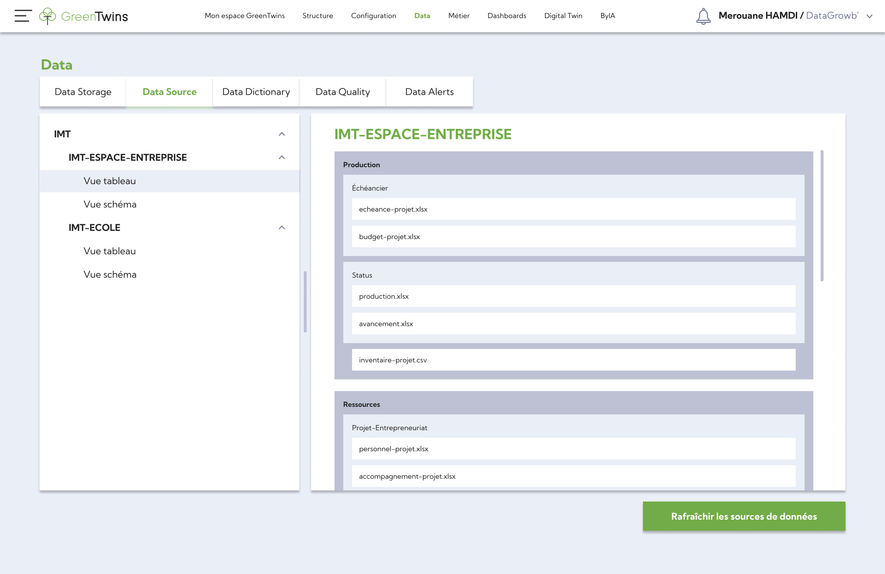
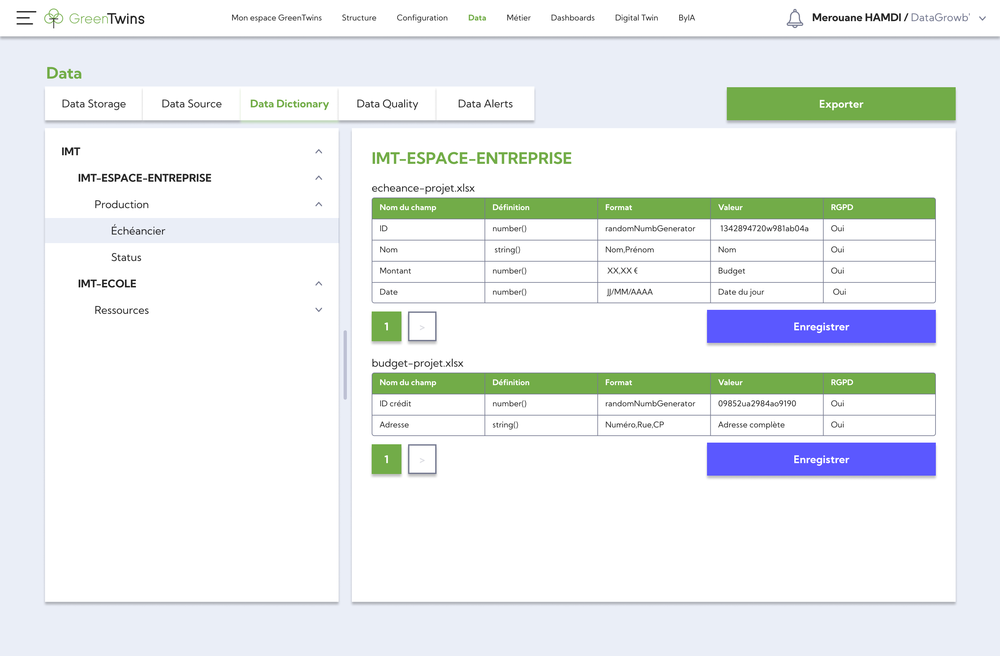
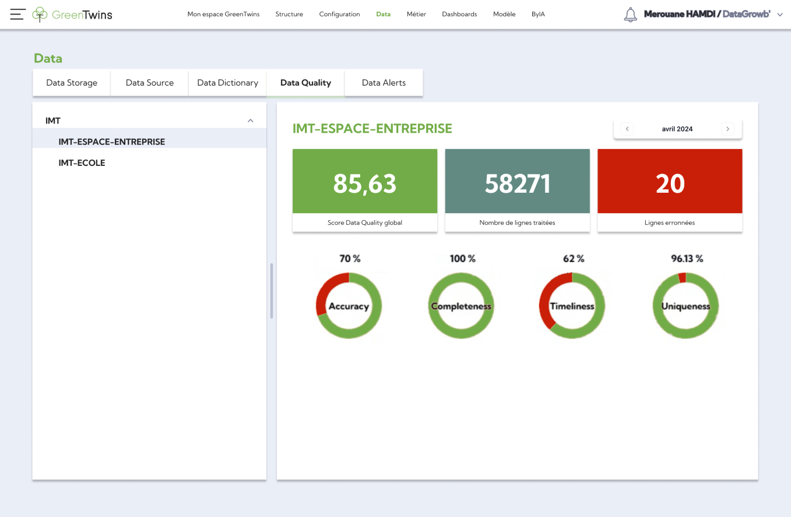
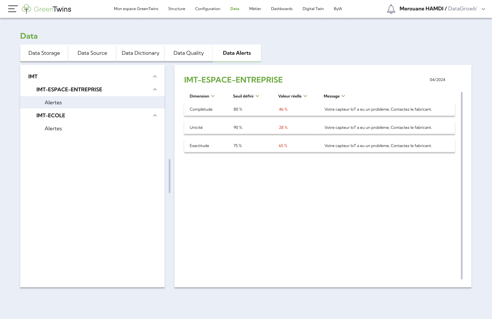

Stockage des données
Notre brique Data offre un stockage sécurisé et évolutif pour toutes vos données, garantissant leur disponibilité et leur intégrité à tout moment.

Source de données
Elle centralise et gère toutes les sources de données, qu'elles proviennent de capteurs loT, de systèmes internes ou de sources externes, offrant ainsi une vue unifiée et cohérente de l'ensemble de vos données.

Dictionnaire de données
Le dictionnaire des données de GreenTwins fournit une documentation complète et structurée de toutes vos données, facilitant ainsi la compréhension et l'utilisation de celles-ci par l'ensemble de votre organisation.

Qualité des données
Nous mettons l'accent sur la gualité des données, en utilisant des outils avancés pour assurer la précision, la cohérence et la fiabilité de vos données, garantissant ainsi des analyses et des décisions basées sur des données de haute qualité.

Alertes de données
Notre brique Data est équipée de fonctionnalités d'alerte avancées qui vous avertissent en temps réel des anomalies ou des événements importants dans vos données, vous permettant ainsi de réagir rapidement et efficacement aux changements.
